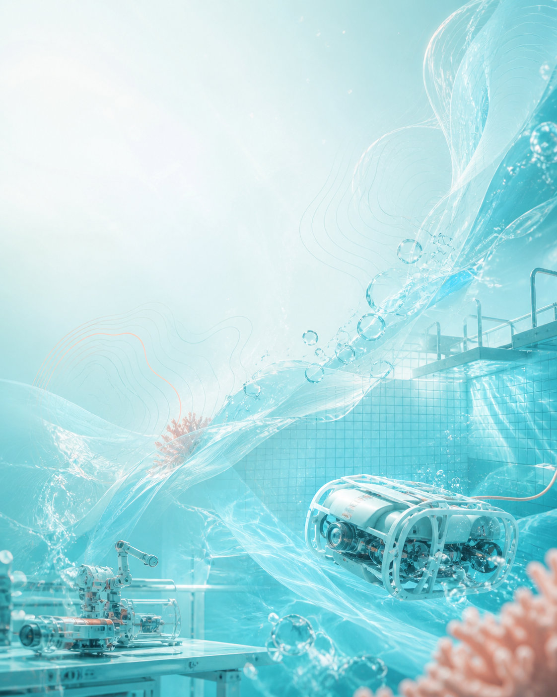
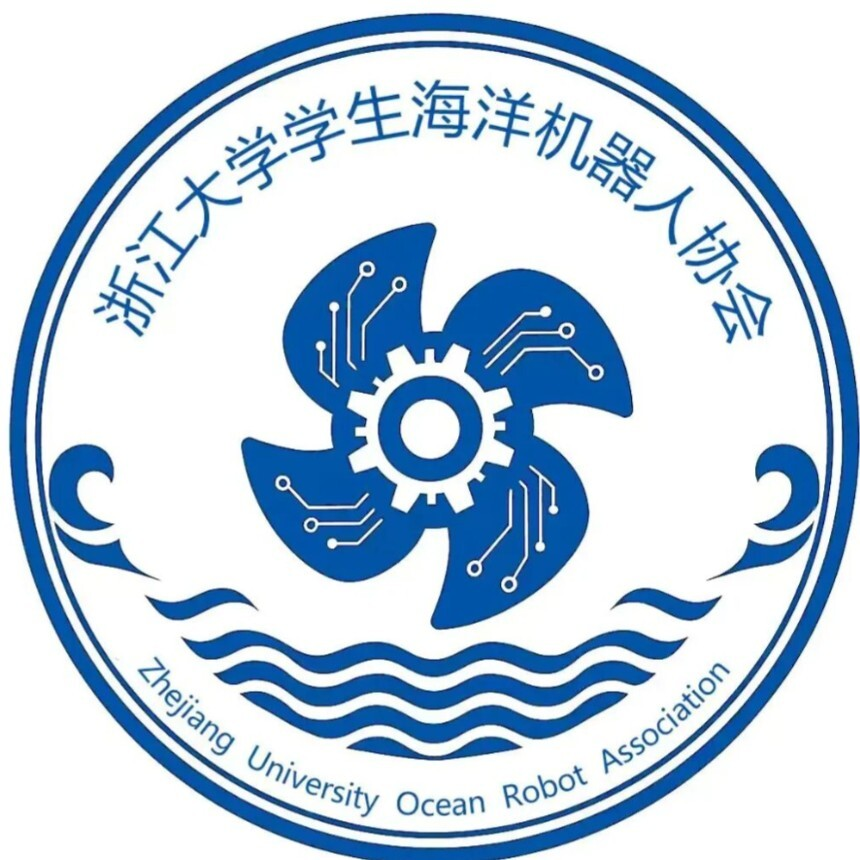
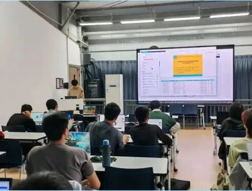
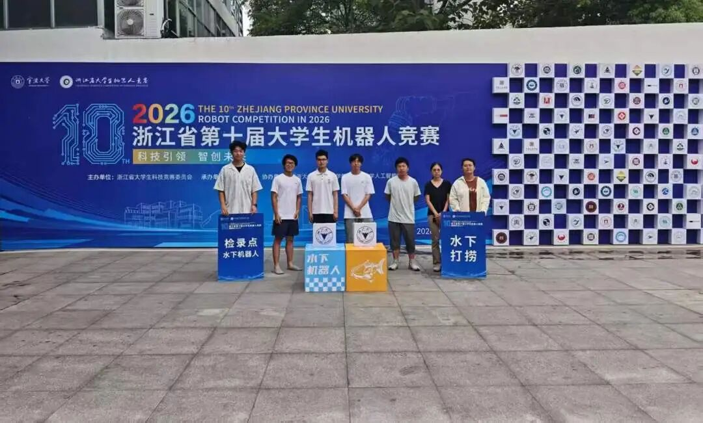
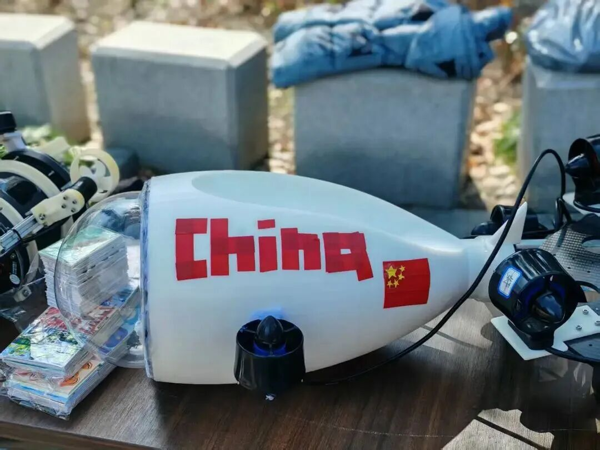

ZJU OCEAN ROBOT ASSOCIATION
2026 · 纳新开启
把奇思妙想，做成真正下水的机器人
从第一颗螺丝、第一行代码开始，把好奇心一路带到水池、赛场和真实海洋工程。
不限年级不限专业不要求基础
向下潜入 ↓
WHO WE ARE · 我们是谁
不是围观机器人，而是亲手让它动起来。
浙江大学学生海洋机器人协会成立于 2023 年 12 月，是面向全校学生的学术科技类社团。
我们关心一张图纸怎样变成真实结构、一段代码怎样驱动设备，以及一支队伍怎样把机器人安全送进水里。
协会提供覆盖算法、电控与结构的机器人设计内训。从基础知识出发，逐步进入方案设计、硬件连接、控制调试和整机联调。
没有基础不是门槛，愿意学习、愿意动手，才是真正的起点。
LEARNING IN ACTION从讲清一个原理，到亲手排查一根线：知识在真实设备上才算闭环。

在讲解和讨论中找到自己的技术方向。

连接、调参、排错，再把问题带回图纸。
FROM CLASS TO WATER
学会之后，下一站是水池。
让算法、电路和结构第一次在同一台机器上说得上话。
02 · BUILD
把机器人送进水里，也送上赛场
一台水下机器人，需要机械结构、电子系统、感知算法和控制策略共同工作。协会提供自主工程实践与竞赛机会，让想法不只停在纸面。
从需求分析到比赛复盘，你会经历一件真实作品被完整做出来的过程。奖项是结果，工程能力与队友默契才是留在手里的东西。

浙江省大学生机器人竞赛水下赛道。

全国海洋航行器设计与制作大赛。

中国机器人大赛暨 RoboCup 中国赛。
ENGINEERING MOMENT
入水那一刻，所有细节都会回答你。
能不能密封、能不能通信、能不能稳定控制——答案都在水里。
03 · TOGETHER
不止有技术，也有一起做事的人
TEAM SIDE QUEST一起熬过联调，也一起把机器人从启真湖里“体面接回家”。
01宣传运营部
运营公众号与小红书，记录活动与比赛，完成海报、易拉宝等视觉物料。
02项目组织部
组织学生自主工程实践，把创意转成项目，并策划志愿服务与团建交流。
03外联合作部
连接科技社团、指导教师与企业，发掘项目机会并争取资源支持。
04顾问团
由往届参赛成员组成，在备赛期间开展专项辅导和经验分享。
只要你对智能硬件、具身智能、电子信息、自动化控制、机械设计或嵌入式开发中的任一方向感兴趣，都欢迎加入。
你可以从第一节内训开始，也可以直接加入适合自己的项目方向。
READY TO DIVE?
带着好奇来，带着真正下过水的作品离开。
2
加入 2026–2027 海洋机器人协会纳新群。